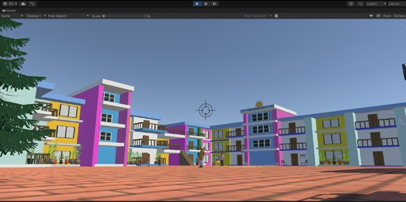

My Project

3D Gokhuldham Society
Created the 3D version of Gokhuldham Society using Unity.This 3D model contains a building, road and a garden, just like society in real as shown in the episodes, also Users can move and explore all the areas. This application is made for the purpose of entertainment so that users can enjoy the environment.

weather app
Created a banking system using java along with the concepts of class, object, and other four pillars of java.This banking system has methods like depositeAmmout.WithdrawAmmout which helps in depoisition and withdrawal.